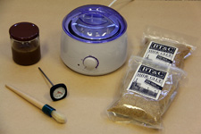

I recently started using liquid hide glue (I have only used Titebond’s liquid hide glue so far, but you can also use Patrick Edwards’ Old Brown Glue) in all of my projects because squeeze out is so easy to clean up, and whatever is left on the wood will not significantly interfere with penetrating finishes. However, a few weeks ago, at the Fine Woodworking Live event in New Haven, CT, period furniture maker Steve Latta recommended that I give hot hide glue a try because of its remarkable properties, which can be very useful under certain circumstances. As a result of this conversation, I decided to purchase some equipment. At minimum, I would need a glue pot, a decent glue brush, a thermometer, and of course some hide glue in granulated form.
The glue pot that most people seem to be using these days is the Hold Heet electric glue pot, available from a variety of retailers. However, I was not ready to invest $135, so I went looking for a cheaper option. After doing some internet searches, I found that people were getting good results using a homemade double boiler on a hot plate, or a modified crock-pot. All those options seem to work well according to those who had used them. However, I was looking for a cheap option that was convenient (a self-powered electric unit is a must) and required little to no modifications out of the box. I finally settled on a wax warmer for $28. I figured that if this unit did not work out, at least I would have some very smooth legs :)
 I also purchased a decent glue brush as well as some 192 and 251 gram strength hide glue from Tools For Working Wood. Finally, I picked up a meat thermometer at the grocery store for $3. Click on the thumbnail on the left for a detailed view of my “el-cheapo hot hide glue kit”.
{kind=link}
After watching this very detailed video showing Patrick Edwards explaining how to use hot hide glue, I felt confident enough to give it a try. It took me a little while to get the dosage just right (at first, I had put too much water) but I eventually made a good batch and used it on a project I am working on. To say that I loved it is an understatement! In my opinion, here are the main benefits of hot hide glue:
- It becomes tacky very quickly as it cools down, reducing or even eliminating the need for clamps. This is especially useful with glue blocks, or when making complex assemblies that would be a nightmare to clamp. It is that quality that makes hammer veneering possible. Note: The glue will reach full strength in about 24 hours once all the water it contains has evaporated.
- It cleans up very easily! Just use a rag impregnated with warm water. However, keep in mind that the longer you wait, the harder it is to clean up…
- It does not creep. Indeed, the glue dries hard unlike PVA glue which retains some of its flexibility. It dries harder than liquid hide glue as well, according to what I have read. This quality can be useful in curved work.
A lot of people mention the reversibility aspect of hide glue (hot or in liquid form) as a major advantage over modern glues. In my opinion, this is only really true when doing veneering work where it is possible to get enough moisture and heat through the thin veneer to loosen the glue bond. However, forget about dislodging a mortise and tenon joint once the glue has fully hardened!
Conclusion: give hot hide glue a try and you’ll be amazed! However, remember to always use the right glue for the right job. Hot hide glue will do wonders in some applications (e.g., hammer veneering, glue blocks, complex assemblies where clamping would be difficult), while other glues might be better suited to other applications…
Believe it or not, it is possible to reverse an M&T joint even after the hide glue has set. It requires water, heat, and patience! :-)
I had to separate this DT,
http://www.jleko.com/Furniture/Portfolio.html#13
after the glue had set. I used boiling water to do the job. Can you tell? Reversibility is another benefit of hide glue!